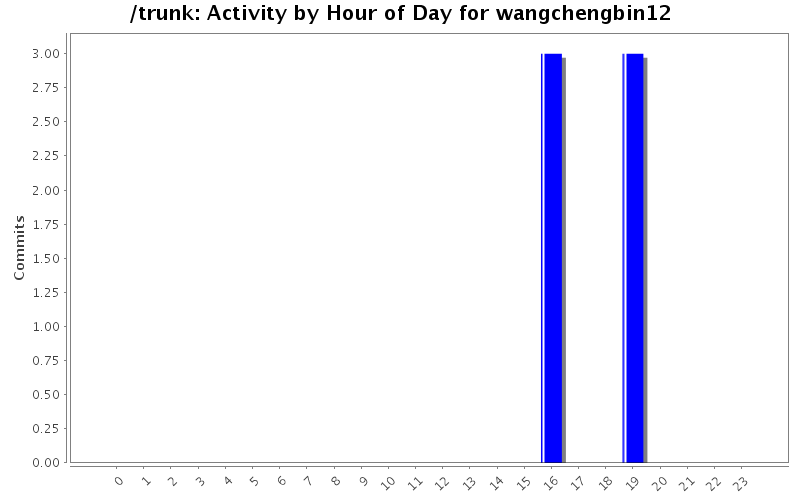
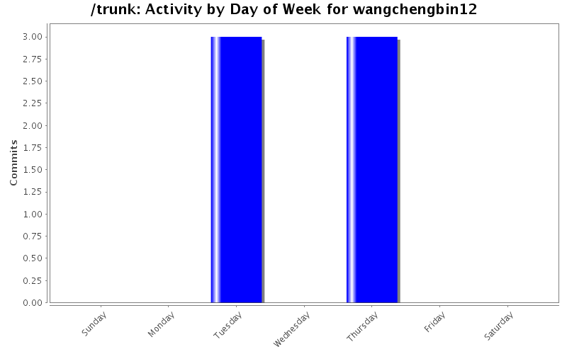
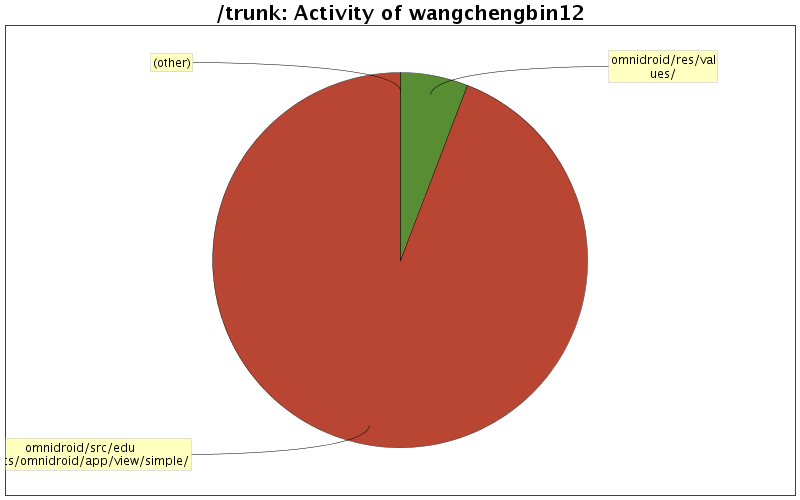

| Directory | Changes | Lines of Code | Lines per Change |
|---|---|---|---|
| Totals | 6 (100.0%) | 221 (100.0%) | 36.8 |
| omnidroid/src/edu/nyu/cs/omnidroid/app/view/simple/ | 3 (50.0%) | 208 (94.1%) | 69.3 |
| omnidroid/res/values/ | 2 (33.3%) | 13 (5.9%) | 6.5 |
| omnidroid/ | 1 (16.7%) | 0 (0.0%) | 0.0 |

Issue 65: Enable Rule on save
78 lines of code changed in 2 files:
Share project "Omnidroid" into "https://omnidroid.googlecode.com/svn/trunk/omnidroid"
0 lines of code changed in 1 file:
rolled back revision 747
70 lines of code changed in 2 files:
new
73 lines of code changed in 1 file: